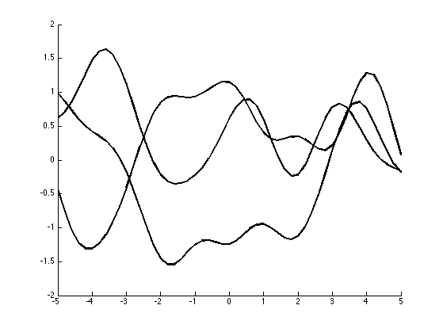

Reproduce figure 2.2 from GP book
setSeed(0);
L = 1;
xs = (-5:0.2:5)';
ns = length(xs);
keps = 1e-8;
muFn = @(x) 0*x(:).^2;
Kfn = @(x,z) 1*exp(-sq_dist(x'/L,z'/L)/2);
figure; hold on
for i=1:3
model = struct('mu', muFn(xs), 'Sigma', Kfn(xs, xs) + 1e-15*eye(size(xs, 1)));
fs = gaussSample(model, 1);
plot(xs, fs, 'k-', 'linewidth', 2)
end
printPmtkFigure('gprDemoNoiseFreePrior')
Xtrain = [-4, -3, -2, -1, 1]';
ftrain = sin(Xtrain);
K = Kfn(Xtrain, Xtrain);
Ks = Kfn(Xtrain, xs);
Kss = Kfn(xs, xs) + keps*eye(length(xs));
Ki = inv(K);
postMu = muFn(xs) + Ks'*Ki*(ftrain - muFn(Xtrain));
postCov = Kss - Ks'*Ki*Ks;
figure; hold on
mu = postMu(:);
S2 = diag(postCov);
f = [mu+2*sqrt(S2);flipdim(mu-2*sqrt(S2),1)];
fill([xs; flipdim(xs,1)], f, [7 7 7]/8, 'EdgeColor', [7 7 7]/8);
for i=1:3
model = struct('mu', postMu(:)', 'Sigma', postCov);
fs = gaussSample(model, 1);
plot(xs, fs, 'k-', 'linewidth', 2)
h=plot(Xtrain, ftrain, 'kx', 'markersize', 12, 'linewidth', 3);
end
printPmtkFigure('gprDemoNoiseFreePost')
